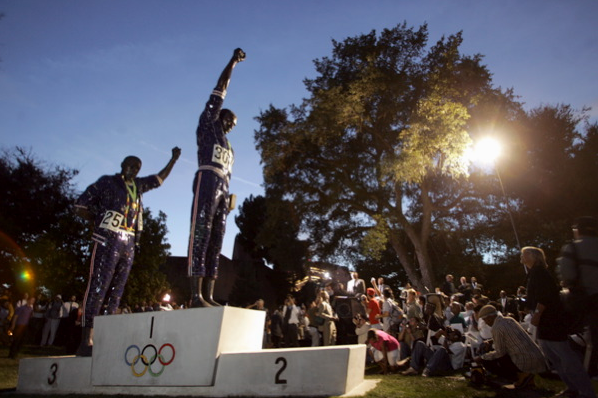

09.12.07
Posted in personal, tv at 10:05 pm by danvk
Back in 2001, I was in first period French class when the planes hit. A messenger came by and told my French teacher, but evidently she decided it wasn’t significant enough to merit interrupting class. I got a confused story of what had happened by my locker after class and was glued to the TV for the rest of the school day. I didn’t tune in to the news until after the first tower had collapsed. So I missed much of the initial reaction.
I’ve always wanted to watch the TODAY show broadcast from that day, to see the initial confusion as to what happened, then the realization of what was going on after the second plane hit. I’d scoured around online a few times before, but always come up empty. So I was thrilled to see that MSNBC was showing a “minimally-edited” replay of the 9/11/2001 TODAY show last night.
Read the rest of this entry »
Permalink
09.05.07
Posted in personal, reviews, sports at 10:43 pm by danvk
I took a walk around the San Jose State University campus yesterday, and stumbled upon this statue:

It’s based on the famous photograph of the black power salute at the 1968 Olympics:

Although less controversial now than it was at the time, I was still surprised to see this moment memorialized as a statue. The more I thought about it, the more it bothered me.
Read the rest of this entry »
Permalink
08.28.07
Posted in astronomy, news, personal, science at 3:05 am by danvk
It’s just entered totality, check it out if you’re awake. It’s shocking how many lights my apartment complex still has on at 3 AM. Although this is an unusually long eclipse, it’s going to be a brief one for me. Lunar eclipses are way cooler when they happen at a more reasonable time.
Permalink
08.11.07
Posted in personal at 4:49 pm by danvk
I filled up on gas today for the first time in almost exactly a month.
It’s always struck me that miles per gallon is a terrible metric. I can increase my average miles per gallon by going on a long road trip with lots of highway driving. But I certainly haven’t saved any gas or money by doing so. The better metric is gallons per week, or maybe even dollars per week. By those standards, I’m using 2.6 gallons/week = $7.70/week at $3/gal. I suspect those are both quite low, whereas I only get just over 20 miles per gallon, a pretty piddling number. What are your numbers?
Permalink
08.07.07
Posted in music, personal at 11:00 pm by danvk
 Not being able to remember the name of a song whose instrumental part is stuck in your head. It’s maddening!
Not being able to remember the name of a song whose instrumental part is stuck in your head. It’s maddening!
NPR plays these fifteen second instrumental clips from popular songs between segments on some shows. I’ve listened to enough music that I’m usually really good at picking out the song. But this one escapes me. And there’s no words, so I can’t search for it!
It brings the whole issue of literacy into focus for me. I don’t think twice about writing a thought down on paper, but when it’s a bit of music, I’m totally powerless. I can’t really reproduce it (it’s got some weird reverb effects going on) and I certainly can’t convey it to someone else. It’s a prisoner in my mind. All I can say is it’s got bass and syncopated, reverbed percussion, like Squarepusher’s “Iambic 5 Poetry“, only more upbeat.
The only way out: I have to listen to every song in my library until I find it. ARGH!!!
Update: Two days later, my fifth guess paid off! It was 0:15 through about 0:30 of “Warning Sign” off More Songs About Buildings and Food by the Talking Heads. For the record, my previous guesses were: Pixies, Pavement, R.E.M. and Boards of Canada.
Permalink
« Previous Page — « Previous entries
Next entries » — Next Page »